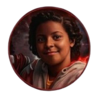
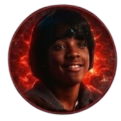

DUSTIN HENDERSON
O especialista técnico e diplomata do grupo. Com um intelecto brilhante e curiosidade insaciável, Dustin domina as frequências de rádio e a lógica dos mistérios do Mundo Invertido. É a ponte entre a ciência e o sobrenatural.

ERICA SINCLAIR
A definição de liderança estratégica e coragem ácida. Erica não aceita menos que a perfeição e provou que o tamanho não define a bravura. Especialista em táticas críticas e em "não ser uma nerd" enquanto salva o mundo.

LUCAS SINCLAIR
O realista e protetor do grupo. Com uma precisão impecável (especialmente com seu estilingue), Lucas traz o equilíbrio necessário entre a cautela e a ação necessária para enfrentar as ameaças que cercam Hawkins.